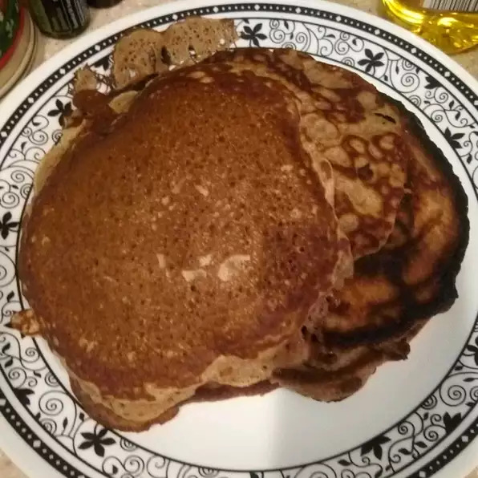

Cinnamon Pancakes
Description
These cinnamon pancakes are delicious and fluffy.
In addition they are very simple to make and are a perfect breakfast option.
Ingredients
- 1 cup all-purpose flour
- 2 and 1/2 tablespoons white sugar
- 2 teaspoons baking powder
- 2 teaspoons ground cinnamon
- 1 teaspoon baking soda
- 1 cup milk
- 1/4 cup butter, melted
- 2 large eggs
- 1 tablespoon vegetable oil, or as needed
Steps
- Mix flour, sugar, baking powder, cinnamon, and baking soda together in a bowl.
- Whisk milk, melted butter, and eggs together in a separate bowl.
Pour milk mixture into flour mixture; whisk until well blended.
- Heat oil on a griddle over medium heat. Drop batter in 1/4 cup scoops onto the hot griddle.
Cook until bubbles form and the edges are dry, 3 to 4 minutes.
Flip and cook until browned on the other side, 2 to 3 minutes.
Remove to a plate and keep warm while you cook the remaining pancakes.
- ENJOY!